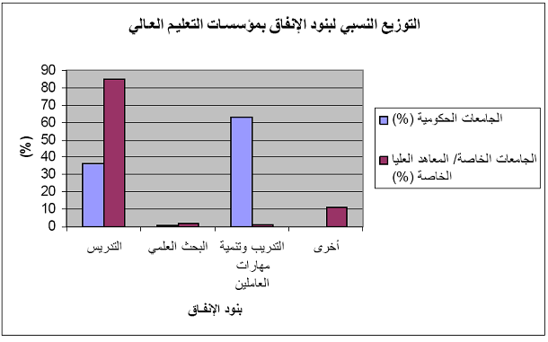

ضَعْف التمويل في قطاع التعليم
يكتسب التعليم أهمية بالغة في حياة المجتمعات والدول باعتباره السبيل الوحيد لإحداث التطور الحضاري والاقتصادي والثقافي والاجتماعي ، فهو من ناحية يمثل أحد أهم مؤشرات التنمية البشرية وهو من ناحية أخري يمثل أهم شكل من أشكال الاستثمار في رأس المال البشري فالتطور الحضاري للمجتمعات لا يقاس فقط بحجم الإستثمار المادي وإنما بما أحرزه من إنجاز علمي وإنتاج معرفي وما أحدثه التعليم من تطور في بناء القدرات البشرية وتنمية المهارات والقدرات. ويمكن القول أن أهم أسباب المعجزة الاقتصادية في دول شرق آسيا هو الاهتمام بتكوين رأس المال البشري، ورأس المال البشرى يعنى إكتساب الأفراد مزيداً من المعرفة والمهارات من خلال التعليم والتدريب والخبرات المتراكمة من أجل زيادة مستوى دخولهم في المستقبل(Mincer, 1958; Schultz, 1961 and Becker, 1962).
لقد أصبح التعليم مورداً استراتيجياً للمجتمعات الحديثة لأنه يمد المجتمع بكافة احتياجاته من الكوادر العلمية المتخصصة مما يساعد علي زيادة القيمة المضافة وتعزيز النمو الاقتصادي، فقد تبين أن نسبة كبيرة من النمو الاقتصادي يمكن أن تعزي إلى التعليم بمفهومه الشامل. فإذا كان التعليم هو أساس التقدم والمسئول الأول عن صياغة المستقبل وإذا كان التعليم العالي يمثل حجر الأساس في مسيرة التقدم، لذا فإن التطوير المستمر في منظومة التعليم العالي هو أمر ضروري. هذا التطوير يحتاج في مراحل معينة إلى إعادة صياغة في الرؤية والاستراتيجيات والسياسات والتي تضمن ملائمة منظومة التعليم العالي لمتطلبات الحاضر والمستقبل.
إن التعليم بصورة عامة والتعليم العالي بصفة خاصة يواجه بالكثير من القيود التي تحد من كفاءته وتضعف من جودة مخرجاته وإمكانية تطوره ولعل أبرز تلك القيود وأشدها تأثيراً على مسيرة التعليم العالي هي محدودية مصادر التمويل وانخفاض كفاءة تخصيصها على مكونات العملية التعليمية الأمر الذي يعيق إمكانية تطوير التعليم العالي وتحسين جودة مخرجاته. إذن، تعد قضية تمويل التعليم العالي من أهم القضايا التي تواجه المجتمع المصري في الوقت الحالي و تحد كثيراً من تحقيق الأهداف التنموية له.
تتطلب مؤسسات التعليم العالي في أي مكان من العالم موارد مالية عالية حتى تحقق أهدافها بكفاءة واقتدار، وهذه المتطلبات المالية تتزايد سنة بعد أخرى حتى تتمكن المؤسسة التعليمية من تطوير برامجها وخططها وأبحاثها. وتواجه الكثير من الدول صعوبات عديدة في توفير الموارد المالية اللازمة وذلك بسبب ضخامة الاستثمارات المالية التي يتطلبها التعليم العالي. وتظهر المشكلة بشكل أكثر وضوحاً في الدول النامية التي اعتمدت بشكل أساسي علي الموارد المالية الحكومية لتمويل التعليم العالي.
كما ذكرنا سالفاً، فإنه على الرغم من الزيادة الملحوظة في الإنفاق الحكومي على التعليم خاصة خلال فترة التسعينات فإن هذه الزيادات تظل قاصرة عن مواجهة أزمات التعليم ، ففي الوقت الذي كان الإنفاق الحكومي لا يتجاوز 4.6 مليار جنيه مصري عام 1990 /1991 ارتفع ليصل إلى 22.2 مليار عام 2003/2004 ثم إلى 24.7 مليار جنيه مصري عام 2004/2005 إلي أن وصل إلي حوالي 40 مليار جنيه مصري عام 2009/ 2010 (Biltagy, 2010)، إلا أن هذه الزيادة لم تكن كافية لمواجهة متطلبات إصلاح التعليم وظلت عاجزة عن إحداث أي إصلاح حقيقي، ومن ثم تدهورت الكفاءة الداخلية والخارجية للتعليم وتمثلت في عدة مؤشرات منها: وجود عجز في أعداد الجامعات والمعاهد العليا مما أدي إلي ارتفاع كثافة الطلاب بالجامعات الحالية، إلي جانب تحيز توزيع الخدمات التعليمية ضد مناطق ومحافظات معينة، كما تدهورت الكفاءة الخارجية لقطاع التعليم متمثلة في عدم المواءمة بين عرض خريجي التعليم العالي والطلب عليهم (مروة بلتاجي، 2012).
ولابد من الإشارة إلي أن نسبة الإنفاق العام علي التعليم العالي إلي إجمالي الإنفاق العام علي التعليم مازالت منخفضة حيث وصلت الي 21.4% عام 2012/ 2013 مقارنة ب 21.8% عام 2010/ 2011 (الجهاز المركزي للتعبئة العامة والإحصاء، مصر في أرقام، 2012، 2013).
وخلاصة القول أن القصور في الإنفاق العام الموجه لقطاع التعليم العالي يمكن إسناده إلي عجز الموازنة من ناحية وارتفاع تكلفة التعليم العالي من ناحية أخري، هذا إلي جانب الأعداد المتزايدة من الطلاب نتيجة الزيادة السكانية والتي خلقت أزمة التعليم العالي نظراً للقدرة الاستيعابية المحدودة لمؤسسات هذا القطاع، إلي جانب الخلل الواضح بين متطلبات سوق العمل المتغيرة بفعل التقدم التكنولوجي والمعرفي ومخرجات قطاع التعليم العالي العاجزة عن مواكبة هذا التطور(مروة بلتاجي، 2012).
من جهة أخري، ترجع عدم كفاءة الإنفاق الحكومي علي التعليم إلي غياب السياسات والخطط التي تحسن توظيف الموارد المحدودة، وتتجلي مظاهر عدم كفاءة الإنفاق الحكومي علي التعليم العالي في مصر في كيفية توزيع ميزانية التعليم العالي علي النفقات الجارية والاستثمارية، حيث نجد أن 78% من موازنة التعليم العالي تذهب للنفقات الجارية، بينما تستحوذ النفقات الرأسمالية علي 22% فقط، بل أن أكثر من 75% من النفقات الجارية مخصصة لأجور العاملين سواء كانوا إداريين أو أكاديميين. أيضاً، تظهر مظاهر عدم الكفاءة في تحيز تقديم الخدمات التعليمية بكل أشكالها لصالح المدن والمناطق الحضرية ضد المناطق الريفية ومحافظات الوجه القبلي (EHDR, 2010).
وبناء علي ما سبق، فلابد من تعبئة أكبر للإنفاق الحكومي على التعليم بشكل عام وعلى التعليم العالي بشكل خاص، ليس فقط من أجل تغطية نسبة أكبر من النفقات الرأسمالية والجارية ولكن أيضاً لتشجيع الاستثمار في قطاع البحث العلمي في الجامعات. فعلي الرغم من أهمية البحث العلمي، فإن التمويل المتاح للبحوث مازال منخفضاً للغاية، ويوضح الشكل رقم (3) التوزيع النسبي لبنود الإنفاق بمؤسسات التعليم العالي (الجامعات الحكومية- الجامعات الخاصة/ المعاهد العليا الخاصة)، ويتضح من الشكل الانخفاض الشديد في قيم الإنفاق علي البحث العلمي، حيث بلغت هذه القيمة 0.8% في الجامعات الحكومية، 1.9% في الجامعات الخاصة والمعاهد العليا الخاصة (بوابة الإحصاءات القومية للتعليم العالي، 2011).

المصدر: بوابة الإحصاءات القومية للتعليم العالي، مركز المعلومات ودعم اتخاذ القرار بمجلس الوزراء المصري، ووزارة التعليم العالي،2011.
إذن، يمكن القول أن مشكلة كفاءة التمويل الحكومي للتعليم العالي في مصر تكمن في صعوبة الجمع بين كفاية التمويل وبين تكافؤ الفرص في الحصول علي التعليم؛ أي العدالة في توزيع الخدمة التعليمية، حيث تتفاقم المشكلة في ظل تزايد الطلب على التعليم في مقابل محدودية الموارد المتاحة. ومن ناحية أخري، يمكن القول أن إهدار المعونات والمنح الدولية، وعدم الاستفادة منها بما يخدم تطوير التعليم والارتقاء به هو من أهم أسباب انخفاض كفاءة استغلال الموارد المالية المتاحة لقطاع التعليم العالي.